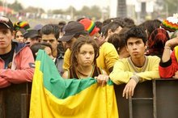

Rock al Parque
 De: La Frikipedia, la enciclopedia extremadamente seria.
De: La Frikipedia, la enciclopedia extremadamente seria.
Como se puede apreciar en la foto, Rock al parque es fundamental para la venta de sombrillas e impermeables
Rock al Parque (también conocido como Porro al Parque, Pogo al Parque, o simplemente camine a matar emos) es el conjunto de actividades sin fecha fija en el que varias Parque Simón Bolívar para realizar tareas complejas como:
- Fumar porro.
- Matar emos y falsos punketos.
- Mojarse con las incesantes lluvias.
- Agredirse entre si o practicar artes marciales.
- Lanzar botellas para descalabrar al primer huevón que le caiga
- Abuchear los grupos caspas que se presenten.
- Enfrentarse a la Policía.
- Botar las correas en la entrada.
- Apoyar la industria de los impermeables.
 una
rasta bastante preocupada por la disminución en sus suministros de porro
Organización del evento
Rock al Parque se caracteriza por llevar a escena grupos o muy caletos, o muy caspas y en menor medida asisten grupos con reconocimiento mundial. Estos se presentan dos escenarios el lago y el plaza, ambos cuentan con una atmósfera contaminada de humo que sale de las bocas de los asistentes que prenden millones de porros creando así un ambiente que puede ir desde la máxima relajación a la extrema agresividad. Los vendedores ambulantes son bastante necesarios ya que ofrecen la marihuana el chorro y en menor medida cosas para comer. El abucheo de los asistentes hacia algunas bandas es usual, como en el caso de las bandas casposas o emo.
Cabe resaltar que durante todo el evento llueve constantemente, esto se logra gracias a un chaman contratado por la alcaldía, sin embargo la lluvia no es obstáculo para que los asistentes sigan disfrutando de la música, el porro y el pogo.
Una de las bandas cuya presencia es esencial para el evento es Koyi K Utho, algunos no es que la consideren como la mejor banda de industrial del país, sino que básicamente... es la única.

Estos metachos se sienten felices por la granizada brutal que cae en el evento, pocos de ellos sobrevivieron a la neumonía que contrajeron días después
Descripción del evento por parte de un asistente
- Una a una, gruesas gotas de lluvia nos cayeron como escupitajos desde el cielo. Aquella lluvia que al principio parecía solo un chubasco, resultó ser una fuerte tormenta que arreció rápidamente. Granizos como pelotazos arrojados con saña apedreaban nuestras cabezas.
- De vez en cuando alguien clamaba: «¡Muerte a los emos!» y volvían a las andadas. Para entonces mi impulso piadoso se había aplacado. Finalmente. ¿no andaban buscando, esos chicos, sensaciones extremas como pánico, frenesí e intenso dolor corporal?... Pues ahí las tenían. Hay que tener cuidado con lo que se desea porque puede cumplirse. Con la expulsión forzada de los emos la cosa volvió a la densa normalidad (...)
Este extraño personaje no puede ser clasificado dentro de ninguna tribu urbana
Tribus urbanas que asisten al evento
- Metachos: en este evento los metachos salen de sus mas oscuros agujeros (o algunos aparecen de la nada, o son personas disfrazadas de metaleros), y demuestran que son la tribu urbana mas grande de la ciudad.
- Rastas: son algunos de los mayores contribuidores en la creación de la nube de humo de porro, y fomentan en gran medida la compra de este cáliz.
- Emos: los emos asisten para ver agrupaciones como pxndx, aunque algunos creen que es debido a su tendencia suicida ya que saben que una vez ingresados al parque, serán masacrados por las hordas de punketos.
- Punketos: estos se encargan de mantener a la policía fuera del evento, hacer los pogos más violentos y también tienen la función de erradicar a los emos.
- Rockeros: estos son los que asisten a ver las bandas más conocidas y a respirar la nube de humo.
Véase también
Autor(es):
- Ultrageno
- Reybendayana
- Dark temptation
- Tetris
- Grounding weivano
- Shadowmura
- Generibot
Frikipedia 2005-2016, Licencia
GFDL 1.2 - Extraído por FrikiLeaks